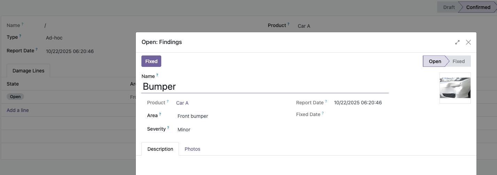
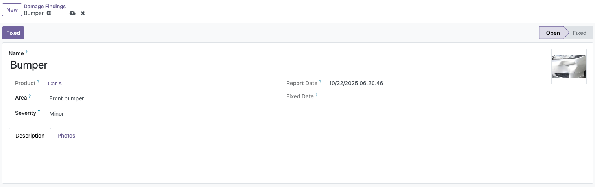

This module adds a comprehensive damage tracking system for rental products, such as vehicles or equipment. It helps rental companies record and monitor damages before and after each rental period.


rental.damage) and line (rental.damage.line) structure.
Rental Damage Form with line details and photos